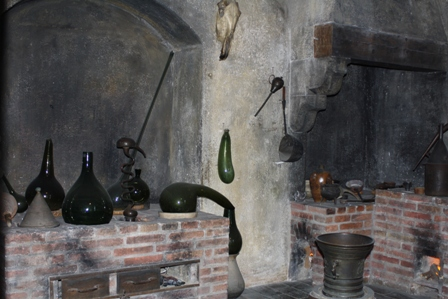

Se amate la scienza e soprattutto la tecnologia come le amo io, allora DOVRESTE andare, almeno una volta nella vita, a girovagare per i corridoi del Deutches Museum di Monaco.
Io l'ho fatto ormai da un bel po' di anni, ed è ormai tempo di tornarci, parola mia!
Ho avuto finora la buona fortuna di visitare un gran numero di musei, d'arte e non di arte, famosi o famosissimi, in Italia e all'estero, sempre raccogliendone grande soddisfazione dal momento che i grandi musei raccolgono la quintessenza della produzione umana in tutti i campi.
Ma il Deutches Museum, per quanto mi riguarda, li batte tutti.
Ciò che si legge in Wiki sui contenuti di questo museo (ed è pure molto corposo) è per forza riassuntivo e riduttivo: in realtà c'è infinitamente, dico infinitamente, di più!
A suo tempo avevo trascorso due giornate girando come un'ape impazzita all'interno delle sue sale, e sono sicuro che non mi basterebbero DUE MESI per vedere bene tutto nei particolari come piace a me.
Per fare solo un esempio da nulla, ricordo che mi ero fermato una mezz'oretta solo davanti ai tubi e tubetti della macchina originale di Linde (1895) per la produzione dell'aria liquida... e quella macchina rispetto al museo E' COME UNA SOLA CELLULA RISPETTO AD UN CORPO INTERO!
E che dire del generatore di Marx (no, non il Marx del Capitale, tutta un'altra persona...) all'ingresso del museo, col suo milione e duecentomila volt?
Roba da starci lì imbambolati a vedere come fa quell'aggeggio gigantesco a fare i fulmini, che sono il pezzo forte per accogliere i visitatori ancora ignari.
E la nostra chimica? Aggiungo solo: adeguata alla situazione... e chi ha orecchie per intendere, intenda.
Tanto per mettere una vecchia foto, ecco la ricostruzione del laboratorio di Lavoisier; ma se non basta c'è anche quello di Justus Liebig.
E così via andando.


"Laboratorium zur Zeit Lavoisier"
Se appena potete, fate una capatina al DM... garantisco che ne vale la pena.
Monaco è una città magnifica, mille cose da vedere, d'arte e di scienza.
E dopo l'indigestione di arte e di scienza, c'è la possibilità, anzi quasi il dovere, di farne un'altra molto più prosaica: uno stinco ciclopico cucinato come si deve, naturalmente da annegare in una birra degna di questo nome.
Prosit!